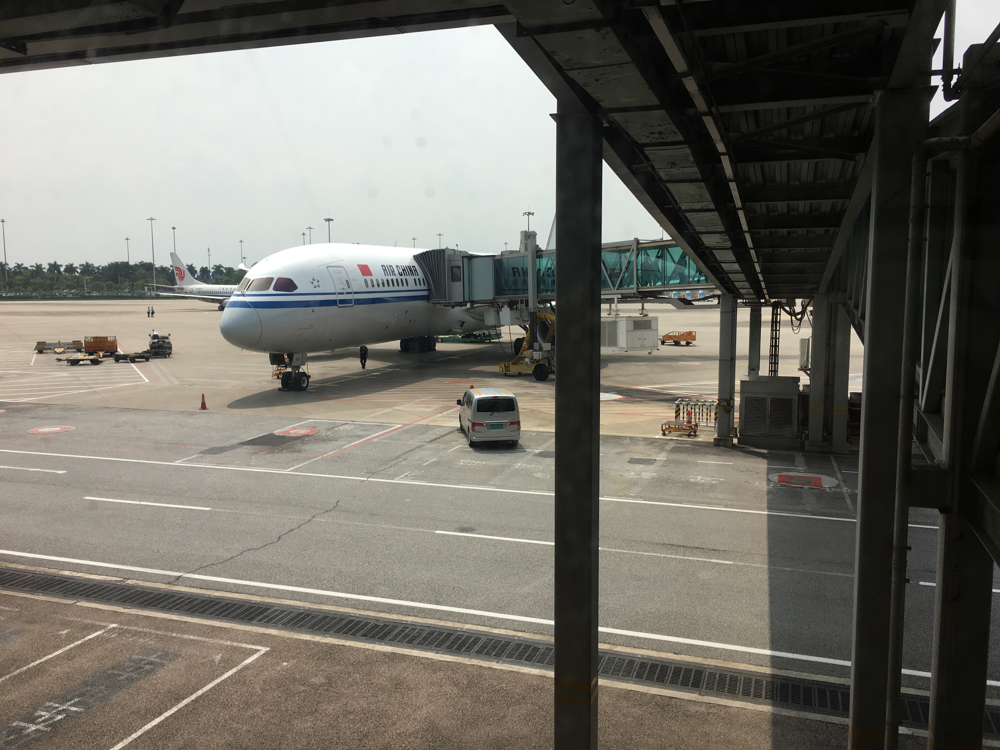
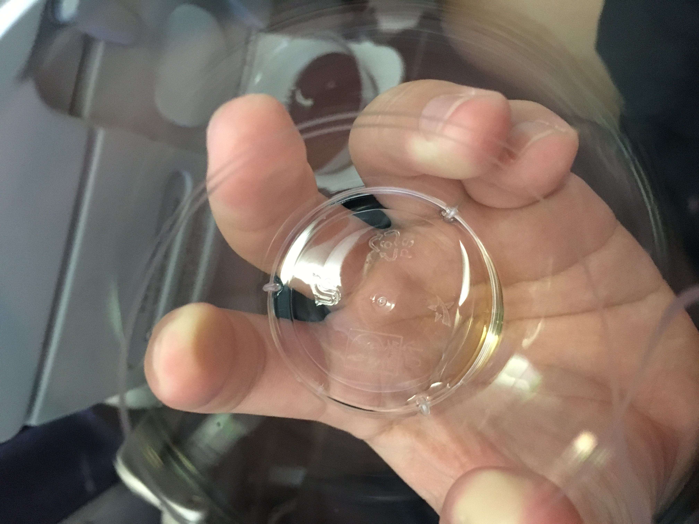
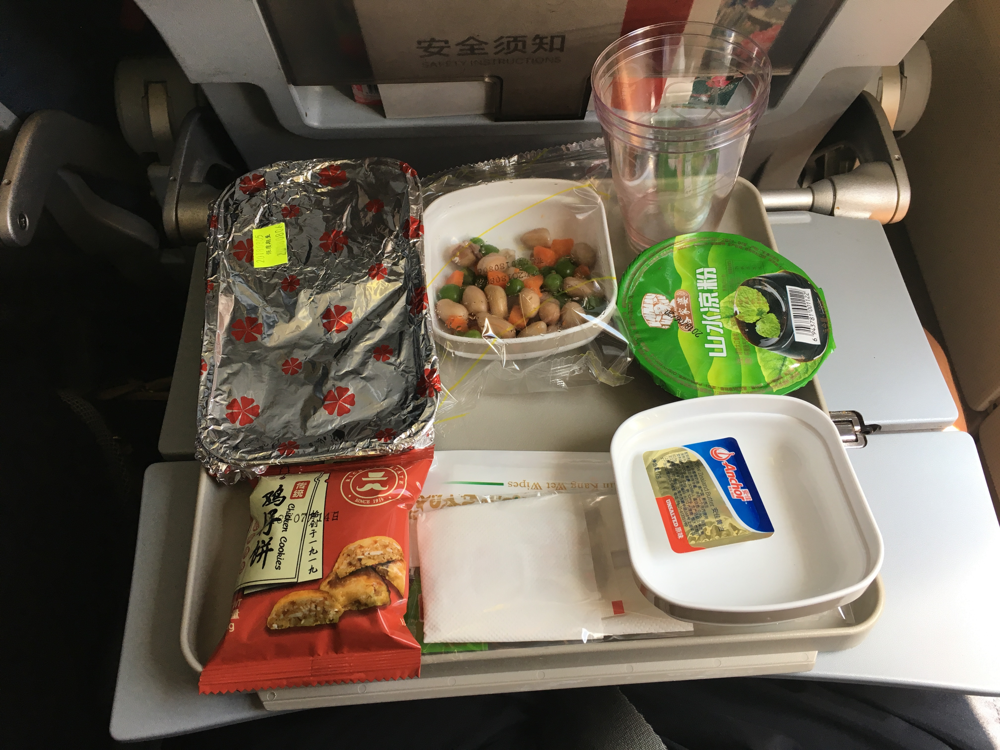

Air China Boeing 787-9 Beijing to Guangzhou and Bonus
This was a flight from Beijing to Guangzhou that I took in the middle of the trip. Originally, on the reverse, I was going to take a Boeing 787-9, but that flight was delayed so that I’d be out of Guangzhou after the time I was supposed to be in Beijing, so I rebooked. This is why I booked this early morning flight, but it would also put me in Guangzhou on time for a train ride.
Check-in was chaotic, there was no way I could take pictures without getting swept the wrong way. So there aren’t pictures.
The flight departed from T3D, so I had to take the train. By the way, the train was before clearing security, and the train also goes to the international departures area (T3E). All I had to do was scan my boarding pass, and I was let into the area to board the train. Now I’m hoping that there’s no gate change, because I don’t seem to find a way to be able to use the reverse.
I think there were only one or two flights out of T3D, including mine, within the hour. Security was too fast, but I got pulled aside for a secondary search. Even with that, security was still quick (probably around 5 minutes, and this was with the secondary search). Pick whichever line you want; there’s a ton of them for the few passengers that just got off the train!
 There’s my plane! B-1591 will operate CA1351 to Guangzhou this morning. Though there’s another thing…
There’s my plane! B-1591 will operate CA1351 to Guangzhou this morning. Though there’s another thing…
Air China operates a Boeing 747-8i daily or twice daily on this route, with a departure around noon. I would’ve picked this flight had I not needed to be in Hong Kong by the evening (taking a train, might I add). Darn. Oh well.
 This is my iPhone picture of my plane, which wasn’t the best, but I kind of wanted the gate area
picture.
This is my iPhone picture of my plane, which wasn’t the best, but I kind of wanted the gate area
picture.
Boarding was quick but I kind of missed the boarding announcement. Air China, like pretty much everyone else on the Boeing 787, uses a 3-3-3 configuration. Which is comfortable on the 777, but a little tight on the 787. Though it didn’t matter for this flight, I wonder how it would feel for a seven-hour flight to Singapore.
View from the back into the forward economy cabin. A problem occurred here where I had to wade an oncoming wave of people because I went to the back cabin for a quick pic before people were seated. That’s on me.
Here’s a darkened cabin from the very back.
Here’s the view just prior to arrival, with mood lighting. This is where I am led to believe the seats are provided by Zodiac and are the Z300 seats.
Be advised that the last few rows, there aren’t overhead bins available because it’s either for emergency equipment (in the case of the starboard side) or the crew rest (in the case of the middle). The overhead bins elsewhere are large, though. I could fit my rollaboard vertically, and I think you could fit four or five in each of these bins.
You’ll probably see about an inch or two from my knees to the seat in front. I’m not a very tall person. You’ll also see the power outlet, which is the green light to my left knee.
Something increasingly unpopular with me is the lack of overhead vents. I don’t care too much if the flight isn’t too long and the cabin is kept cooler, but this is a plane used for some longer international flights.
Planes these days… got these massive windows. Not that I’m arguing, of course!
 Safety card is standard.
Safety card is standard.
Mood lighting is always appreciated, when used correctly (including on at boarding and completely dark (i.e. lights off), the former not being true with this flight).
The whole reason why I wanted a seat over the wing was to watch the wing flex, which is always interesting. I tried to get some footage, but it ended up being the camera getting tossed around.
 Here’s the IFE screen at boarding.
Here’s the IFE screen at boarding.
 After taking off, I found that there were three language options.
After taking off, I found that there were three language options.
 The map was of the latest version, interactive.
The map was of the latest version, interactive.
 And here were some entertainment options. I didn’t count, but I had a book I was reading, so I did
that instead.
And here were some entertainment options. I didn’t count, but I had a book I was reading, so I did
that instead.
First round of drinks, and I found that this table was two-fold. Anyways, is it too early for a coke with ice?
They do serve breakfast on this flight. Options for the entrée were congee or omelet. Carbs or protein. I choose protein. This is served with bread, jam, yogurt, and two slices of fruit (half a peach and one slice of pineapple).
The bread was a croissant with jam. It was flaky, though it was a little colder because it was packaged.
Here is the omelet option. It was quite bland, and no salt (at least any salt packets) was to be seen. Everything minus the tomato was dry. Though I still appreciate being served breakfast at 9:00 (around the time of both Beijing and Guangzhou when we got food).
The wing flex is amazing, as always.
I visited the bathroom about 40 minutes prior to landing. It was quite clean. And I ignored the “return to seat” indicator because it’s always on. On a flight two years ago, on a Boeing 777-200 to Shenzhen, I asked a flight attendant why the sign always stays on. He said it’s because they want to remind people to keep their seatbelts fastened at all times while seated, even without turbulence.
By the time I started walking back to my seat, the cabin lights were being turned on, starting with mood lighting.
Here’s a view of the plane while deplaning in Guangzhou from the jet bridge…
 And here’s the view from the terminal. Note the bridge from upstairs; departures and arrivals are separated here.
To get to Beijing, I flew the reverse on an Airbus A330-300 (which was a repositioning flight, because of delays during the 2-day period).
I had grape juice to start. The A330-300 seats come with a cup holder.
 Here are the cups, by the way, used by Air China. They’re pretty solid!
The entertainment screen was definitely older generation, with a harder touch required…
And they still come with the old armrest systems… whatever they called it.
 This is a “lunch” flight (I saw the catering company moving carts onto the plane).
I had a coke with ice and water.
Legroom was quite decent, I think the pitch was 31” to 32”.
And here’s views while deplaning, from the terminal.
The A330-300 flight was not part of this post, so there are no comments in the conclusion for that flight. The Boeing 787-9 flight was meant for the plane and time. The meal was forgettable, but I appreciate that there was something with some nutrition (carbs or protein, I never said it’s completely carbs and protein) to eat on this flight. I didn’t go into the IFE that much, so I don’t have any comments other than the screen and moving map is decent. In summary, this is the standard domestic flight in China, and the aircraft type and time fit my schedule, so it did the job.